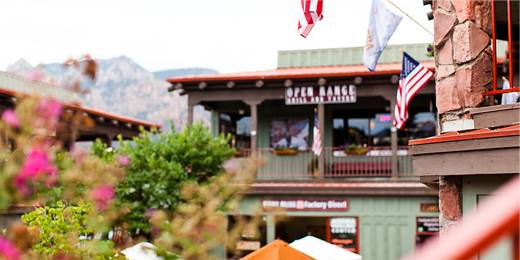

Седона
Особенности городка
Седона — небольшой городок в Аризоне, заслуживающий большего!
Рассмотрим 5 причин, по которым Седона круче, чем гранд каньон!
-
Настоящий городок
— № 1 —
Седона не аттракцион для туристов, там течет своя жизнь
 -
Жилье
Рекомендуем пожить в настоящем мотеле, все как в кино!
-
Сувениры
Не только китайского, но и местного производства!
-
Еда
Всегда заказывайте фирменный бургер, Вы не разочаруетесь!
-
-
Там есть мост дьявола
— № 2 —
Да, по нему можно пройти! Если вы осмелитесь, конечно
-
Небольшая площадь
— № 3 —
Все интересные места находятся очень близко
-
Красивая дорога
— № 4 —
Ехать из Лас-Вегаса совсем не скучно!
-
Мало туристов
— № 5 —
Большинство туристов едет в Гранд каньон и толпится там
Подбор гостиницы
Заинтересовались?
Укажите предполагаемые даты поездки, и мы покажем вам лучшие предложения гостиниц в Cедоне
Найти гостиницу